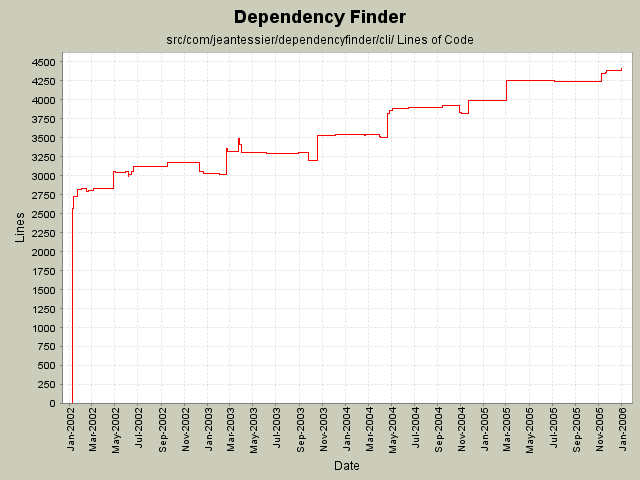

Summary Period: 2002-01-10 to 2005-12-30
[root]/src/com/jeantessier/dependencyfinder/cli

Total Lines Of Code:
4400 (2006-01-04 08:56)
| Author | Changes | Lines of Code | Lines per Change |
|---|---|---|---|
| jeantessier | 413 (100.0%) | 12774 (100.0%) | 30.9 |
Use Java 5.0 features for autoboxing.
31 lines of code changed in:
Remove Xalan JARs, use implementation from JDK instead.
39 lines of code changed in:
Removed dead constants
2 lines of code changed in:
Use event-driven loop in ClassMetrics
4 lines of code changed in:
Better command-line switch processing
36 lines of code changed in:
Refactor strategy instantiation
55 lines of code changed in:
Merge redesign for published API JarJarDiff
115 lines of code changed in:
Moved Hex from com.jeantessier.dependencyfinder to com.jeantessier.text so classes in other packages can use it.
2 lines of code changed in:
Minor clean up
2 lines of code changed in:
Clean up extra "throws" clauses and unused parameters
25 lines of code changed in:
Use only spaces for indentation
3544 lines of code changed in:
New ClassFinder tool
267 lines of code changed in:
Update copyright notice to 2005
16 lines of code changed in:
Moved dependency-related metrics to Manual.
Renamed SymbolList to ListSymbols.
New ListSymbols Ant task.
195 lines of code changed in:
Preload all graphs for more accurate measurements
21 lines of code changed in:
Adjust parameters for DependencyClosure
20 lines of code changed in:
Rename setters that were named getXXX() by mistake
29 lines of code changed in:
TransitiveClosure uses TransitiveClosureEngine
40 lines of code changed in:
TransitiveClosure uses TransitiveClosureEngine
1 lines of code changed in:
Normalize processing
11 lines of code changed in:
(95 more)
Generated by StatCVS 0.2.2